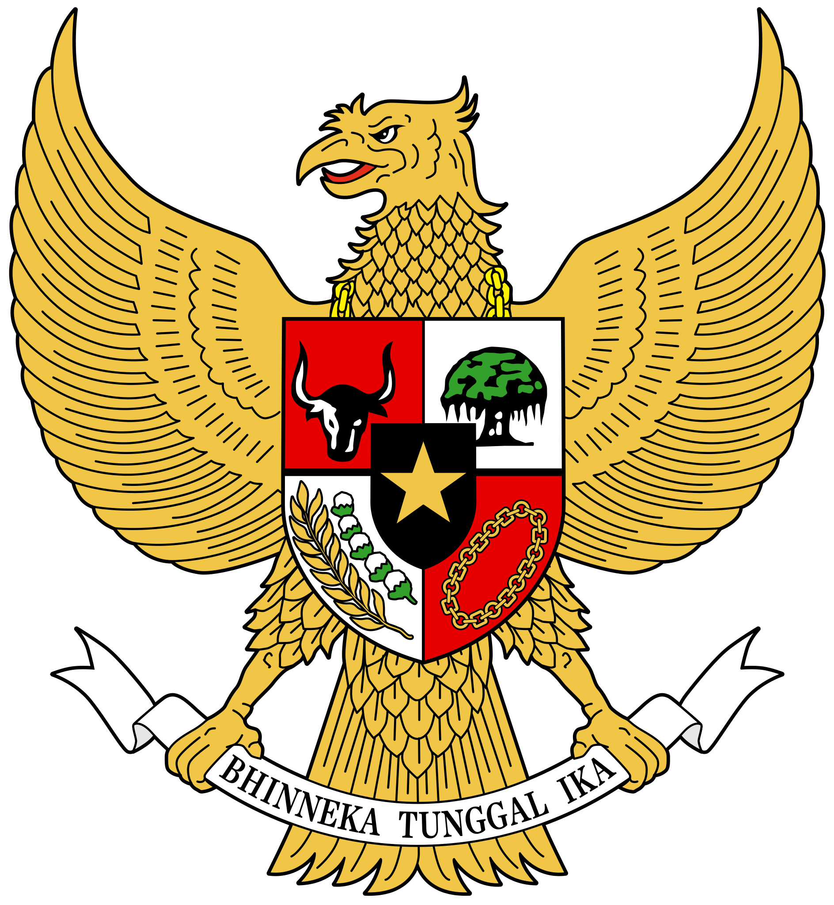

Pancasila
Pengertian Menurut Soekarno
Soekarno, Proklamator Republik Indonesia yang juga merupakan Bapak Proklamasi, memberikan pemahaman yang mendalam tentang Pancasila. Menurut Soekarno, Pancasila adalah filosofi hidup bangsa Indonesia yang terdiri dari lima sila, yaitu Ketuhanan Yang Maha Esa, Kemanusiaan yang Adil dan Beradab, Persatuan Indonesia, Kerakyatan yang Dipimpin oleh Hikmat Kebijaksanaan dalam Permusyawaratan/Perwakilan, dan Keadilan Sosial bagi Seluruh Rakyat Indonesia. Ia menjelaskan bahwa Pancasila bukan hanya sekedar dasar negara, tetapi juga merupakan panduan moral yang harus dijadikan pedoman dalam kehidupan berbangsa dan bernegara.
Pengertian Menurut Muhammad Yamin
Muhammad Yamin merupakan tokoh yang ikut berperan dalam penyusunan naskah proklamasi kemerdekaan Indonesia. Menurutnya, Pancasila adalah rumusan yang menggambarkan cita-cita dan tujuan perjuangan bangsa Indonesia. Ia menekankan bahwa Pancasila memiliki arti mendalam, yaitu menjunjung tinggi hak asasi manusia, keadilan sosial, persatuan, dan kesatuan bangsa. Bagi Yamin, Pancasila adalah cerminan dari semangat perjuangan kemerdekaan yang harus terus dijaga dan diperjuangkan oleh seluruh rakyat Indonesia.
Pengertian Menurut Ali Sastroamidjojo
Ali Sastroamidjojo, seorang ahli hukum dan diplomat Indonesia, memberikan pengertian Pancasila yang lebih terfokus pada aspek politik. Menurutnya, Pancasila adalah landasan dan sumber hukum tertinggi di Indonesia. Ia menganggap Pancasila sebagai konstitusi yang bersifat fleksibel dan dapat menyesuaikan dengan perkembangan zaman. Ali Sastroamidjojo juga menekankan bahwa Pancasila adalah landasan bagi pembentukan lembaga-lembaga negara dan sistem pemerintahan yang berkeadilan.
Pengertian Dr. Radjiman Wedyodiningrat
Dr. Radjiman Wedyodiningrat, salah seorang tokoh pergerakan nasional dan perumus pertama Pancasila, memberikan pemahaman Pancasila dari sudut pandang historis. Baginya, Pancasila adalah hasil sintesis nilai-nilai budaya Indonesia dan konsep-konsep perjuangan nasional yang terbentuk selama ribuan tahun. Ia menggambarkan Pancasila sebagai suatu ideologi yang mencerminkan kepribadian dan identitas bangsa Indonesia, yang mencakup keberagaman dan keadilan.